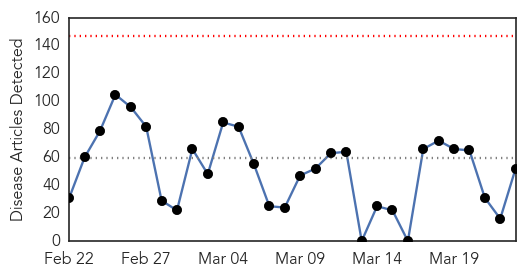
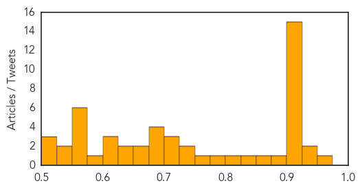
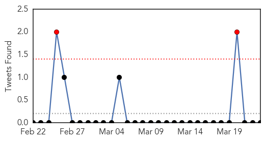

Unknown
30-Day Web Trend
0 alerts, 0 warnings

30-Day Twitter Trend
0 alerts, 0 warnings
Article Locations
Article Confidences
Top Articles:
- 0.973
- Dell Children’s lifts visitors policy as flu season winds down
- 0.949
- Tuberculosis down slightly, remains a concern in Washington
- 0.925
- Northern Voices Online Spring brings thousands of allergy cases across U.S.
- 0.917
- Chicago Tribune
- 0.917
- Chicago Tribune
- 0.917
- Chicago Tribune
- 0.917
- Chicago Tribune
- 0.917
- Chicago Tribune
- 0.917
- Chicago Tribune
- 0.917
- Chicago Tribune
- 0.917
- Chicago Tribune
- 0.917
- Chicago Tribune
- 0.917
- Chicago Tribune
- 0.917
- Chicago Tribune
- 0.917
- Chicago Tribune
- 0.917
- Chicago Tribune
- 0.917
- Chicago Tribune
- 0.902
- Michigan horse health concerns after equine herpes virus kills one
- 0.891
- Health News
- 0.857
- State and Regional
- 0.842
- Index: Valley had nation’s second highest flu activity
- 0.824
- Dead crows put Sultanpur on avian flu alert
- 0.794
- MOH launches chlorination of water in schools
- 0.764
- E.Coli outbreak linked to Chipotle spreads to 3 more states -
- 0.750
- 50% TB patients go to chemists, non-allopathic practitioners first
- 0.747
- Fecal transplant? Syracuse doctors fight deadly infection with human waste
- 0.720
- Orang Asli issues: Managing health still a problem - People
- 0.715
- Limited testing frustrates efforts to control HIV outbreak
- 0.702
- 3-fold rise in very resistant TB cases detected
- 0.697
- Local doctor seeking glucose-testing devices for women in Guyana
- 0.690
- Five children die as gastroenteritis virus hits Chin State
- 0.683
- KFVS12 News & Weather Cape Girardeau, Carbondale, Poplar Bluff
- 0.682
- Doctors amputate Savisaar's leg above knee
- 0.669
- Combined Joint Task Force - Horn of Africa
- 0.668
- HIV Continues to Plague Indiana, CDC to Arrive on Monday
- 0.638
- Cairns State High TB test results due today
- 0.631
- PIMS starts receiving pollen allergy patients
- 0.622
- CHC school tele-health clinics celebrate anniversary
- 0.615
- Seeking Big Improvements in Drug Resistant TB Treatment
- 0.606
- Vanuatu cyclone survivors: 'They're drinking mud'
- 0.594
- 13,732 rural households face drinking water problem
- 0.571
- Haiti program attracts students
- 0.567
- TB makes worrying comeback
- 0.563
- La Commission européenne et la Banque européenne d’investissement facilitent l’accès au crédit pour les agriculteurs
- 0.560
- Northern Ireland TB cases up by a third
- 0.555
- Cyclone Pam: UNICEF flash alert #4
- 0.552
- Health expert pushes for more info dissemination about TB
- 0.534
- 2 more North Dakota deer test positive for chronic wasting
- 0.527
- MoH has ‘right to hire medicos from abroad’
- 0.512
- New Hopes for Rheumatic Fever Vaccine
Showing top 50 articles...
Top Tweets:
- 0.610
- Primer test positivo de ébola en Liberia desde hace un mes http://t.co/H7j9ASYXpS via
MERS
30-Day Web Trend
0 alerts, 0 warnings
30-Day Twitter Trend
3 alerts, 5 warnings

Article Locations

Article Confidences

Top Articles:
-
No articles found for Mar 23, 2015
Top Tweets:
-
No tweets found for Mar 23, 2015